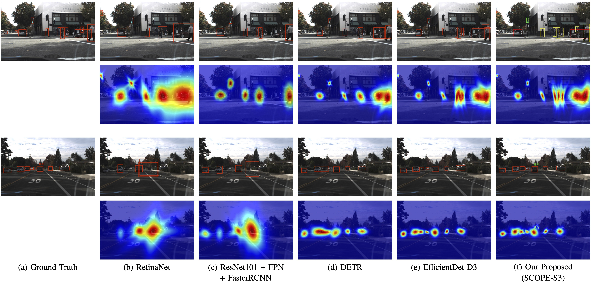
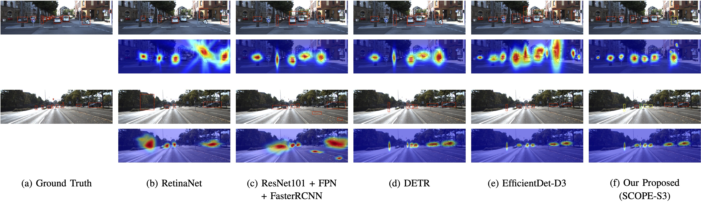
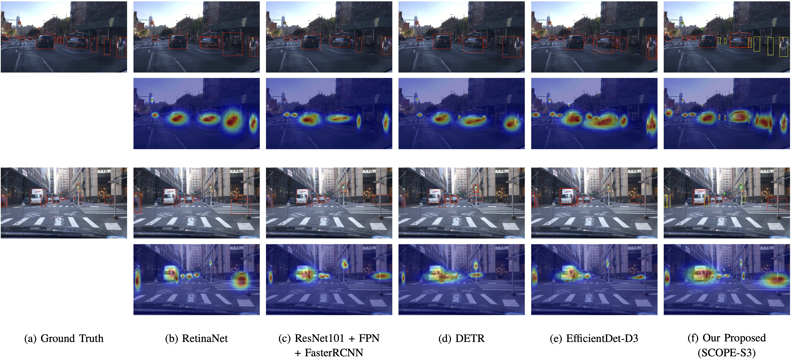
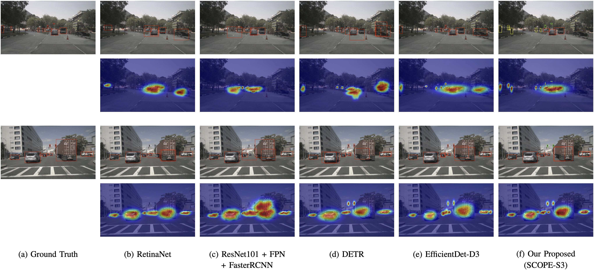

Spatial-Channel Refinement
Channel and spatial attention are incorporated into MBConv blocks to preserve discriminative details and improve feature quality throughout the backbone.
Under Review at IEEE Transactions on Intelligent Transportation Systems
Reliable object detection is a critical component of perception systems in autonomous driving, where recognizing objects and understanding complex scenes are essential for safety and decision-making. Although EfficientDet offers a promising trade-off between accuracy and efficiency, its performance can be limited by the loss of fine-grained spatial details, suboptimal multi-scale feature fusion, and increased latency caused by stacking multiple BiFPN modules.
We propose SCOPE, a latency-aware adaptive fusion framework for real-time autonomous-driving perception. SCOPE enhances the EfficientNet backbone through spatial and channel attention refinement inside MBConv blocks and introduces efficient adaptive channel-wise feature weighting for multi-scale fusion. A single-layer adaptive attention fusion module dynamically prioritizes informative features while reducing redundant propagation and computational overhead. Experiments across multiple autonomous-driving datasets show that SCOPE improves detection performance while reducing computational complexity and inference latency.

Channel and spatial attention are incorporated into MBConv blocks to preserve discriminative details and improve feature quality throughout the backbone.
Channel-wise adaptive weighting dynamically emphasizes informative scales instead of relying on fixed or purely scalar fusion weights.
A single efficient fusion layer reduces redundant computation while preserving strong multi-scale representations for real-time inference.
A unified spatial-channel optimization strategy that improves feature representation in an EfficientNet-based object detector.
An efficient adaptive attention fusion module that dynamically prioritizes useful multi-scale features through channel-wise weighting.
A latency-aware single-layer fusion design that improves detection performance while reducing FLOPs and inference time.
Extensive evaluation on autonomous-driving datasets, including cross-domain tests and qualitative analysis under challenging scene conditions.
| Method | Backbone | mAP@[0.5:0.95] (%) | Parameters (M) | FLOPs (B) | Latency (s) |
|---|---|---|---|---|---|
| Faster R-CNN | ResNet-101 + FPN | 60.09 | — | — | — |
| EfficientDet-D3 | EfficientNet-B3 | 60.42 | — | 19.22 | 0.1042 |
| SCOPE-S3 | EfficientNet-B3 + Attention | 61.05 | 5.94 | 17.75 | 0.0913 |
| Method | mAP@[0.5:0.95] (%) | Parameters (M) | FLOPs (B) | Latency (s) |
|---|---|---|---|---|
| DETR | 56.83 | — | — | — |
| EfficientDet-D3 | 65.41 | — | — | — |
| SCOPE-S3 | 67.28 | 5.94 | 14.93 | 0.0754 |
| Fusion Configuration | Fusion Depth | mAP@0.5 (%) | mAP@0.75 (%) | mAP@[0.5:0.95] (%) | Latency (s) |
|---|---|---|---|---|---|
| Adaptive Attention BiFPN | 1 | 72.98 | 61.18 | 59.02 | 0.0599 |
| Scale | EfficientDet FLOPs (B) | SCOPE FLOPs (B) | FLOPs Reduction (%) | EfficientDet Latency (s) | SCOPE Latency (s) | Latency Reduction (%) |
|---|---|---|---|---|---|---|
| D0 / S0 | 2.55 | 1.91 | 25.10 | 0.0810 | 0.0780 | 3.70 |
| D1 / S1 | 4.88 | 4.12 | 15.57 | 0.0868 | 0.0813 | 6.28 |
| D2 / S2 | 9.61 | 8.62 | 10.30 | 0.0943 | 0.0857 | 9.16 |
| D3 / S3 | 19.22 | 17.75 | 7.65 | 0.1042 | 0.0914 | 12.30 |
| D4 / S4 | 38.72 | 36.27 | 6.33 | 0.1171 | 0.0988 | 15.62 |
| D5 / S5 | 88.30 | 81.89 | 7.26 | 0.1340 | 0.1086 | 18.98 |
| D6 / S6 | 178.67 | 145.24 | 18.71 | 0.1561 | 0.1213 | 22.27 |
| D7 / S7 | 321.82 | 258.25 | 19.75 | 0.1850 | 0.1380 | 25.41 |
“—” indicates values that are not included on this public project page.




Primary training and evaluation dataset with diverse urban driving scenes and multiple road-user categories.
Used for validation, comparison with established baselines, and fusion ablation experiments.
Used for cross-domain qualitative evaluation under varied traffic, weather, and illumination conditions.
Used to assess generalization to complex urban scenes captured with a different sensor and data distribution.
Source code, trained models, configuration files, and detailed inference instructions will be released in the official repository.
github.com/imaniraei/SCOPE@article{iraei2026scope,
title = {SCOPE: Spatial-Channel Optimization with Efficient Adaptive Fusion for Real-Time Object Detection in Autonomous Vehicles},
author = {Iraei, Iman and Ahmad, M. Omair and Swamy, M. N. S.},
journal = {Submitted to IEEE Transactions on Intelligent Transportation Systems},
year = {2026}
}This research was supported in part by the Natural Sciences and Engineering Research Council of Canada (NSERC) and the Regroupement Stratégique en Microélectronique du Québec.